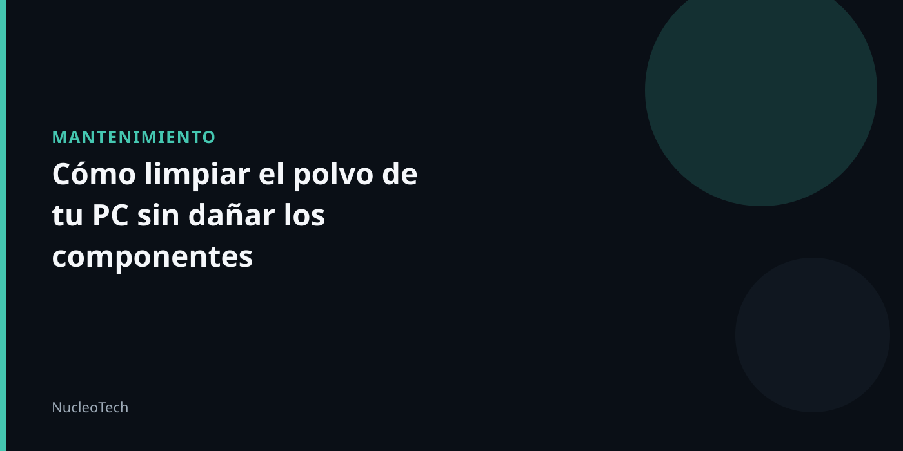

¿Por qué es importante limpiar el polvo de tu PC?
El polvo es un enemigo silencioso para tus componentes electrónicos. Puede causar sobrecalentamiento, interferencias de señal y daño a las partes móviles. Por eso, es fundamental limpiarlo regularmente.
Preparación previa
- Apaga la PC y desconecta la fuente de alimentación.
- Desconecta todos los cables de conexión.
- Ubica los componentes que debes limpiar, como el procesador, la placa base, los ventiladores y la memoria RAM.
Materiales necesarios
- Un par de guantes de látex
- Un paño suave y limpio
- Un espray de aire comprimido
- Un paño de microfibra
- Un destornillador pequeño
Passos para limpiar el polvo
- Aplica el espray de aire comprimido en el área que deseas limpiar.
- Utiliza el paño de microfibra para recoger el polvo y limpiar la superficie.
- Repite el proceso hasta que el polvo esté completamente eliminado.
- Usa el paño suave y limpio para limpiar cualquier rastro de polvo en las partes móviles.
- Desconecta los componentes y colócalos en una superficie plana.
- Utiliza el destornillador pequeño para quitar cualquier tapa o panel que se encuentre en el camino.
- Coloca los componentes limpiados en su lugar original.
Advertencia de seguridad
Recuerda que el polvo puede ser una amenaza para tu salud, especialmente si eres alérgico. Utiliza un mascarilla y guantes de látex para protegerte.
Conclusión
Limpiar el polvo de tu PC es una tarea importante para mantener su rendimiento y prolongar su vida útil. Siguiendo estos pasos, podrás hacerlo de manera segura y efectiva.